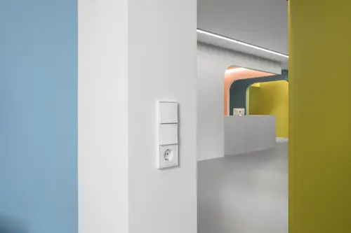
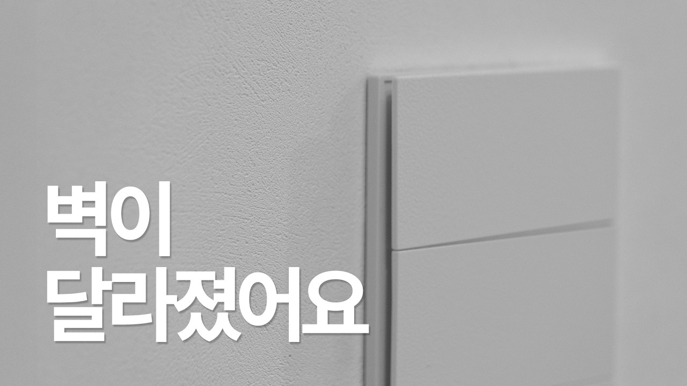
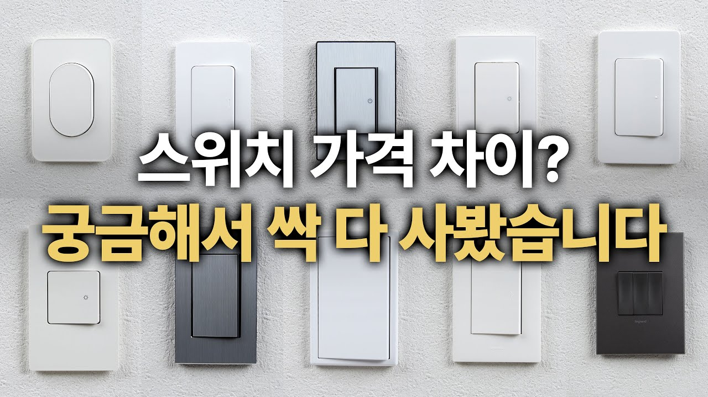
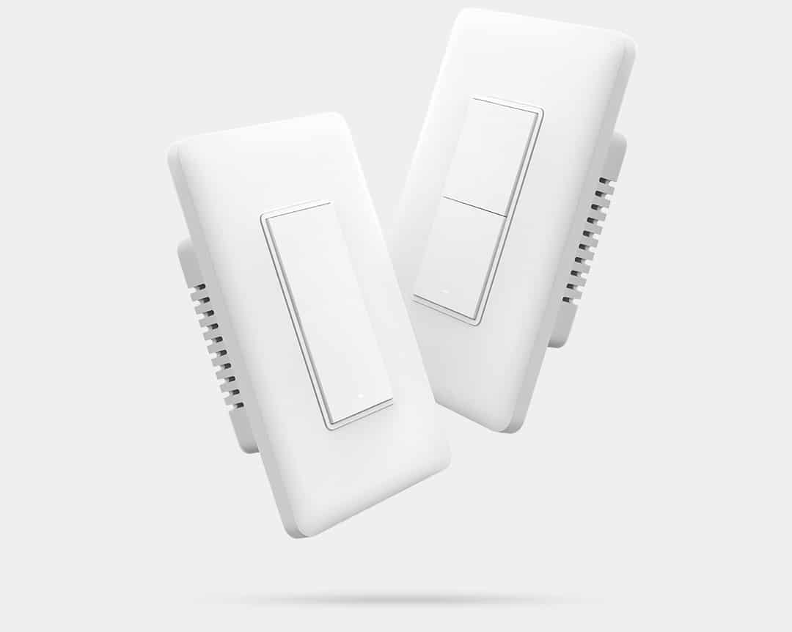

매입박스 규격
국산형·유럽형 플레이트 크기와 고정 방식 확인

DESIGN IS NOT ENOUGH
스위치는 마감판만 바꾸는 소품이 아닙니다. 매입박스 규격, 배선, 조명 부하와 스마트홈 방식이 맞지 않으면 추가 공사나 기능 제한이 생깁니다.
국산형·유럽형 플레이트 크기와 고정 방식 확인
1로·3로, 중성선 유무와 스위치 수량 기록
LED 부하, 디밍 방식과 최소 부하 확인
타일·도장·벽지 시공 후 돌출과 단차 확인
기존 아파트의 국산 매입박스를 그대로 활용할 수 있는지, 유럽형 전용 박스와 보강 공사가 필요한지 먼저 구분합니다.
일부 제품은 국산·유럽형 박스를 모두 지원하지만 모든 라인업이 같은 것은 아닙니다. 선택한 정확한 모델의 설치 자료로 확인합니다.

그레인 스위치는 외곽 프레임의 존재감을 줄이고 넓은 키가 전면을 채우는 풀프레임 디자인을 합리적인 선택지로 보여줍니다. 화이트 벽지와 맞추면 스위치가 벽면에 자연스럽게 녹아듭니다.
절제된 외관 · 넓은 조작면 · 기존 인테리어에 적용하기 쉬운 화이트 디자인
구성품 누락 · 매입박스 깊이와 고정 상태 · 스위치 수와 회로 구성
도배지가 플레이트 뒤에서 울거나 뜨지 않도록 벽면 평활도와 재단선을 확인
외곽선이 벽의 작은 오차를 가려주고 교체·보수가 비교적 편합니다. 기존 벽면을 부분 교체할 때 안정적입니다.
현실적인 부분 교체벽과 스위치가 한 면처럼 보이는 대신 수평·수직, 도배 재단과 벽면 평활도가 더 잘 드러납니다.
전체 마감과 함께 계획소재·프레임·기능 모듈 선택 폭이 넓지만 제품비와 전용 부품, 설치 규격과 납기를 함께 봐야 합니다.
디자인·기능 우선
10개 제품의 형태·플레이트 비례·색상 비교
가격이 높다고 모든 집에 더 좋은 선택은 아닙니다. 벽에 설치했을 때의 비례, 키를 누르는 감각과 소리, 기존 박스에 맞는지, 나중에 같은 제품을 다시 구할 수 있는지를 함께 비교합니다.
진흥전기 J시리즈 · 제일전기 디아트 · 나노전기 아트2 · 위너스 벨로 · 신동아 리젠
베코 보노 · 제일전기 디노 · 르그랑 아펠라 · 위너스 아루
르그랑 아테오 KS
딸깍거리는 크기와 음색은 침실·서재처럼 조용한 공간에서 체감 차이가 큽니다.
누르는 힘, 반발감과 키의 흔들림을 확인합니다. 가족 모두가 편하게 조작할 수 있어야 합니다.
유광·무광·금속 무늬와 지문, 미세한 스크래치가 조명 아래에서 어떻게 보이는지 확인합니다.
기존 매입박스가 기울었거나 벽이 고르지 않으면 플레이트 틈과 수평 오차가 드러납니다.
표시등의 위치와 밝기가 밤에 거슬리지 않는지, 조명 종류와 기능이 맞는지 확인합니다.
샘플을 고를 때는 제품 앞면만 보지 말고 스위치 뒷면 깊이, 단자 방식, 정격과 인증 표시, 포함된 플레이트·모듈까지 한 세트로 확인하세요.
아래 제품군은 대표적인 성향을 찾기 위한 출발점입니다. 최종 선택은 국내 인증, 정격, 매입 규격과 A/S 가능 여부를 함께 확인합니다.
절제된 정사각 비례와 다양한 소재가 특징. 미니멀·클래식 공간에 모두 어울립니다.
규격·수입 부품 확인기본형부터 디밍과 다양한 마감까지 선택 폭이 넓어 현실적인 고급화에 적합합니다.
모델별 박스 호환 확인금속의 질감과 선명한 존재감을 주는 포인트형. 벽 컬러와 금속 마감을 함께 맞춥니다.
지문·도장 손상 관리국내 공간에 적용하기 좋은 디자인 계열. 실물 색상과 플레이트 단차를 확인합니다.
라인업·납기 확인앱·타이머·센서 자동화가 가능한 스마트 스위치 계열입니다.
중성선·허브·통신 방식 확인작고 정제된 비례와 섬세한 조작감이 특징인 디자인 선택지입니다.
직구·부품 수급 확인유리·세라믹 등 오브제에 가까운 표면으로 벽면의 강한 포인트가 됩니다.
파손·교체 비용 확인다양한 기능과 디자인 시스템을 갖춘 글로벌 제품군입니다.
국내 정격·설치 부품 확인화이트도 벽지·도장·필름과 미묘하게 색이 다릅니다. 플레이트를 벽 샘플 위에 놓고 낮과 밤의 조명에서 확인하세요.
앱으로 켜고 끄는 기능뿐 아니라 허브, 센서, 네트워크 장애 시 기본 조작, 가족 계정과 향후 교체 가능성까지 확인합니다.
중성선 유무 · 허브 필요 여부 · 조명 부하 · 3로 구성 · 플랫폼 호환 · 인터넷 중단 시 동작

TV·공유기·스피커·청소기와 소파 양옆 충전 위치
대형가전 전용 회로와 소형가전 동시 사용 수량
침대 양옆, 조명·충전기와 화장대 사용 위치
방수 등급과 습식 구역 이격, 드라이어·비데 위치
모든 스위치·콘센트 위치, 회로와 개수 촬영
플레이트·모듈·색상과 기능표 작성
벽 마감 전에 매입박스와 중성선, 회로 보완
타일공·도장공과 타공 크기, 설치 높이 공유
전문가가 결선하고 정격·접지·작동 상태 점검
07 · ESTIMATE CHECK
영상에서 적정 예산을 다루지만, 정확한 금액은 제품과 수량·배선 상태가 확인되어야 계산할 수 있습니다. 공간한쪽 견적서는 아래 항목을 분리합니다.
제품비스위치·콘센트·플레이트·통신 모듈
부자재매입박스·전선·커넥터·보강재
철거·보수기존 제품 철거와 벽·타일 보수
인건비교체·신설·이설·회로 작업을 구분
스마트 설정허브 설치·연동·자동화 설정